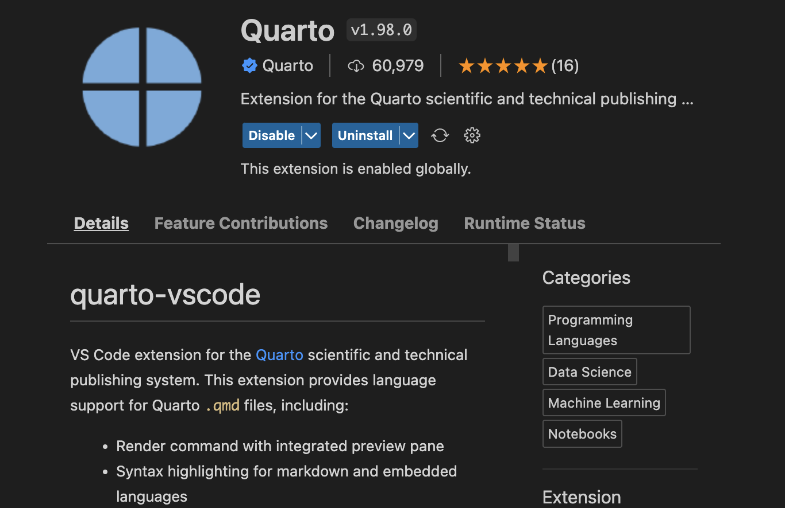
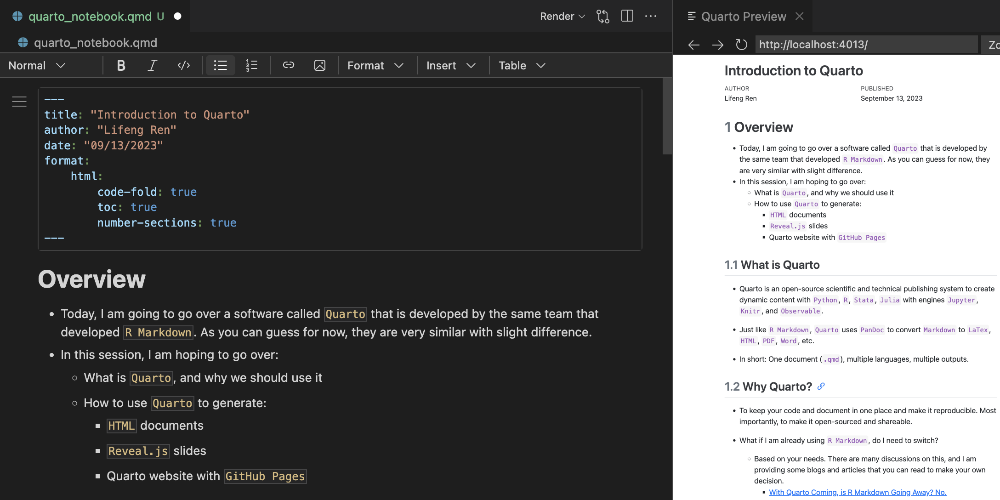
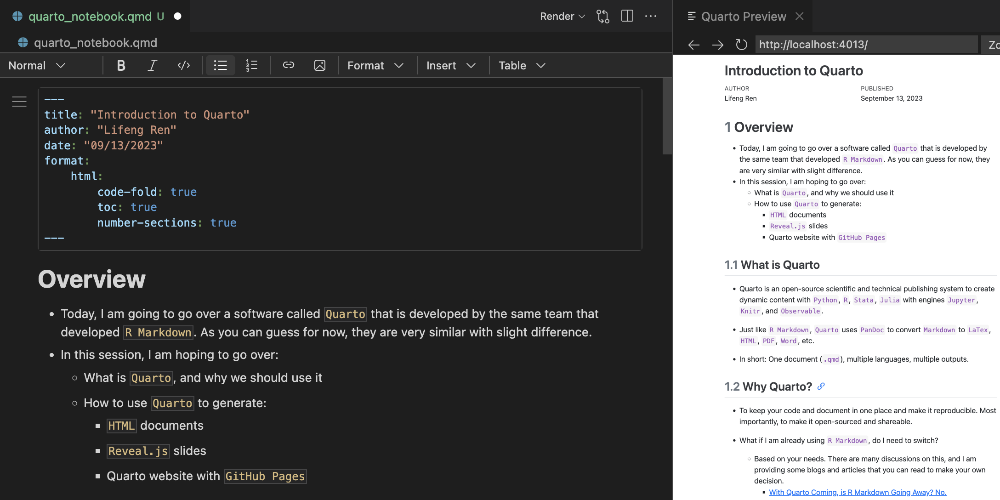

Code
library(ggplot2)
ggplot(airquality, aes(Temp, Ozone)) +
geom_point() +
geom_smooth(method = "loess"
)
Quarto that is developed by the same team that developed R Markdown. As you can guess for now, they are very similar with slight difference.Quarto, and why we should use itQuarto to generate:
HTML documentsReveal.js slidesGitHub PagesQuarto is an open-source scientific and technical publishing system to create dynamic content with Python, R, Stata, Julia with engines Jupyter, Knitr, and Observable.
Just like R Markdown, Quarto uses PanDoc to convert Markdown to LaTex, HTML, PDF, Word, etc.
In short: One document (.qmd), multiple languages, multiple outputs.
To keep your code and document in one place and make it reproducible. Most importantly, to make it open-sourced and shareable.
What if I am already using R Markdown, do I need to switch?
Figure 1 further explores the impact of temperature on ozone level.
library(ggplot2)
ggplot(airquality, aes(Temp, Ozone)) +
geom_point() +
geom_smooth(method = "loess"
)
To play with Quarto, you should firstly download Quarto from here, install it, and choose your favorite IDE to write Quarto documents. I am using VS Code with Quarto extension installed to show the demo today.
If you are using R Studio, once you installed Quarto, you do not need any extra steps. Just restart your R Studio and you are good to go.
In the VS Code IDE, you need to install Quarto extension in the Extensions marketplace.

Quarto documentAs I mentioned above, Quarto can support many output formats. Today, I am going to show you how to generate HTML documents, Reveal.js slides, and Quarto website with GitHub Pages. For a full list of reference, please visit this page: https://quarto.org/docs/guide/.
Quarto provides a Notebook Editor and a Visual Editor mode to write the document. (DEMO)
 

It can be rendered into different type of outputs. (DEMO for HTML, PDF, Word)
HTML format.Almost all syntax are the same for R Markdown and Quarto because they are based on Markdown. So, I won’t go over the syntax a lot today. You can find more information here: https://quarto.org/docs/authoring/markdown-basics.html
YAML header has some differences. Here is an example:
| RMarkdown | Quarto |
|---|---|
| output: html_document | format: html |
| output: pdf_document | format: pdf |
| output: word_document | format: docx |
underscore: _ (e.g.: number_sections: true) |
dash: - (e.g.: number-sections: true) |
| Rerender all the code | Rerender only when source changes |
New Features in Quarto’s YAML header:
execute:
freeze: auto # re-render only when source changes ```{r setup, include=FALSE}
``` ```{r}
#| label: "setup"
#| include: false
```Stata, R, and Python into one DocumentSince Quarto can choose the corresponding language engine based on the code chunk’s language, we can run Stata code in Python and R code chunks to weave all three languages coding into one document.
Step 1: Install pystata, and stata_setup package using pip or conda, or mamba, etc. (Here is an example using pip)
pip install pystata
pip install stata_setupStep 2: Point the stata_setup to your Stata installation directory
display c(sysdir_stata) in the command window.stata_setup.config() function like below.
___ ____ ____ ____ ____ ®
/__ / ____/ / ____/ 17.0
___/ / /___/ / /___/ MP—Parallel Edition
Statistics and Data Science Copyright 1985-2021 StataCorp LLC
StataCorp
4905 Lakeway Drive
College Station, Texas 77845 USA
800-STATA-PC https://www.stata.com
979-696-4600 stata@stata.com
Stata license: Single-user 8-core , expiring 1 Jan 2025
Serial number: 501709301094
Licensed to: Lifeng Ren
APEC
Notes:
1. Unicode is supported; see help unicode_advice.
2. More than 2 billion observations are allowed; see help obs_advice.
3. Maximum number of variables is set to 5,000; see help set_maxvar.Step 3: Run Stata code in Python
from pystata import stata
stata.run('''
sysuse auto, clear
summarize
reg mpg price i.foreign
ereturn list
''')
.
. sysuse auto, clear
(1978 automobile data)
. summarize
Variable | Obs Mean Std. dev. Min Max
-------------+---------------------------------------------------------
make | 0
price | 74 6165.257 2949.496 3291 15906
mpg | 74 21.2973 5.785503 12 41
rep78 | 69 3.405797 .9899323 1 5
headroom | 74 2.993243 .8459948 1.5 5
-------------+---------------------------------------------------------
trunk | 74 13.75676 4.277404 5 23
weight | 74 3019.459 777.1936 1760 4840
length | 74 187.9324 22.26634 142 233
turn | 74 39.64865 4.399354 31 51
displacement | 74 197.2973 91.83722 79 425
-------------+---------------------------------------------------------
gear_ratio | 74 3.014865 .4562871 2.19 3.89
foreign | 74 .2972973 .4601885 0 1
. reg mpg price i.foreign
Source | SS df MS Number of obs = 74
-------------+---------------------------------- F(2, 71) = 23.01
Model | 960.866305 2 480.433152 Prob > F = 0.0000
Residual | 1482.59315 71 20.8815937 R-squared = 0.3932
-------------+---------------------------------- Adj R-squared = 0.3761
Total | 2443.45946 73 33.4720474 Root MSE = 4.5696
------------------------------------------------------------------------------
mpg | Coefficient Std. err. t P>|t| [95% conf. interval]
-------------+----------------------------------------------------------------
price | -.000959 .0001815 -5.28 0.000 -.001321 -.000597
|
foreign |
Foreign | 5.245271 1.163592 4.51 0.000 2.925135 7.565407
_cons | 25.65058 1.271581 20.17 0.000 23.11512 28.18605
------------------------------------------------------------------------------
. ereturn list
scalars:
e(N) = 74
e(df_m) = 2
e(df_r) = 71
e(F) = 23.00749448574634
e(r2) = .3932401256962295
e(rmse) = 4.569638248831391
e(mss) = 960.8663049714787
e(rss) = 1482.593154487981
e(r2_a) = .3761482982510528
e(ll) = -215.9083177127538
e(ll_0) = -234.3943376482347
e(rank) = 3
macros:
e(cmdline) : "regress mpg price i.foreign"
e(title) : "Linear regression"
e(marginsok) : "XB default"
e(vce) : "ols"
e(depvar) : "mpg"
e(cmd) : "regress"
e(properties) : "b V"
e(predict) : "regres_p"
e(model) : "ols"
e(estat_cmd) : "regress_estat"
matrices:
e(b) : 1 x 4
e(V) : 4 x 4
e(beta) : 1 x 3
functions:
e(sample)
. library(Statamarkdown)Stata found at /Applications/Stata/StataMP.app/Contents/MacOS/StataMPThe 'stata' engine is ready to use.stataexe <- "/Applications/Stata/StataMP.app/Contents/MacOS/StataMP"
knitr::opts_chunk$set(engine.path=list(stata=stataexe))sysuse auto, clear
summarize
reg mpg price i.foreign
ereturn list(1978 automobile data)
Variable | Obs Mean Std. dev. Min Max
-------------+---------------------------------------------------------
make | 0
price | 74 6165.257 2949.496 3291 15906
mpg | 74 21.2973 5.785503 12 41
rep78 | 69 3.405797 .9899323 1 5
headroom | 74 2.993243 .8459948 1.5 5
-------------+---------------------------------------------------------
trunk | 74 13.75676 4.277404 5 23
weight | 74 3019.459 777.1936 1760 4840
length | 74 187.9324 22.26634 142 233
turn | 74 39.64865 4.399354 31 51
displacement | 74 197.2973 91.83722 79 425
-------------+---------------------------------------------------------
gear_ratio | 74 3.014865 .4562871 2.19 3.89
foreign | 74 .2972973 .4601885 0 1
Source | SS df MS Number of obs = 74
-------------+---------------------------------- F(2, 71) = 23.01
Model | 960.866305 2 480.433152 Prob > F = 0.0000
Residual | 1482.59315 71 20.8815937 R-squared = 0.3932
-------------+---------------------------------- Adj R-squared = 0.3761
Total | 2443.45946 73 33.4720474 Root MSE = 4.5696
------------------------------------------------------------------------------
mpg | Coefficient Std. err. t P>|t| [95% conf. interval]
-------------+----------------------------------------------------------------
price | -.000959 .0001815 -5.28 0.000 -.001321 -.000597
|
foreign |
Foreign | 5.245271 1.163592 4.51 0.000 2.925135 7.565407
_cons | 25.65058 1.271581 20.17 0.000 23.11512 28.18605
------------------------------------------------------------------------------
scalars:
e(N) = 74
e(df_m) = 2
e(df_r) = 71
e(F) = 23.00749448574634
e(r2) = .3932401256962295
e(rmse) = 4.569638248831391
e(mss) = 960.8663049714787
e(rss) = 1482.593154487981
e(r2_a) = .3761482982510528
e(ll) = -215.9083177127538
e(ll_0) = -234.3943376482347
e(rank) = 3
macros:
e(cmdline) : "regress mpg price i.foreign"
e(title) : "Linear regression"
e(marginsok) : "XB default"
e(vce) : "ols"
e(depvar) : "mpg"
e(cmd) : "regress"
e(properties) : "b V"
e(predict) : "regres_p"
e(model) : "ols"
e(estat_cmd) : "regress_estat"
matrices:
e(b) : 1 x 4
e(V) : 4 x 4
e(beta) : 1 x 3
functions:
e(sample) Reveal.js slidesI normally has a document first and then copy and paste it into a new Quarto document to generate Reveal.js slides. But you can also just change a few things in the YAML header to generate Reveal.js slides.
The key thing we need to modify is the format in the YAML header. Here is an example:
---
title: "Introduction to Quarto"
author: "Lifeng Ren"
date: "09-13-2023"
format:
revealjs: # revealjs slides
theme: default # default, beige, sky, night, serif, simple, solarized
chalkboard: true # add a chalkboard to the slides
scrollable: true # make the slides scrollable: this is useful for long slides (or sometimes you directly change the yaml header from the html document)
---## Slide 1
::: {.incremental}
- Item 1
- Item 2
::::::: {.columns}
::: {.column width="40%"}
Left column
:::
::: {.column width="60%"}
Right column
:::
::::Suppose we would like to highlight the following code
ax.plot(theta, r)x.grid(True)We could use the following code to highlight the code in a presentation
```{.python code-line-numbers="7,9"}
import numpy as np
import matplotlib.pyplot as plt
r = np.arange(0, 2, 0.01)
theta = 2 * np.pi * r
fig, ax = plt.subplots(subplot_kw={'projection': 'polar'})
ax.plot(theta, r)
ax.set_rticks([0.5, 1, 1.5, 2])
x.grid(True)
plt.show()
```GitHub PagesIn order to generate a personal website hosted by GitHub, we need to do the following things:
A github account
Create a new repository with the name of username.github.io (e.g.: lfr00154.github.io)
quarto_demosite as the repository name.Create a new Quarto website project.
_quarto.yml file, add output-dir: docs under the project section.Go to GitHub and upload the whole project to the repository you just created.
Go to the repository’s Settings and scroll down to the GitHub Pages section. Choose main branch - docs, as the source and click Save. Then you will see the link to your personal website.